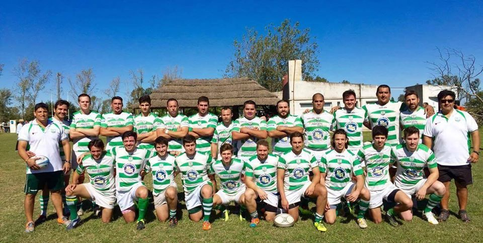

Hola. Me llamo Guido Culasso. Tengo 32 años. Soy estudiante de la carrera de Licenciaruta en Producción de Videojuegos y Entretenimiento Digital en la UNRaf.
También tengo dos trabajos. Mi trabajo principal es ser controlador de estacionamiento del ZEC (Zona de Estacionamiento Controlado) de la ciudad de Rafaela. Estoy desde el año 2015, cuando se implemento este nuevo sistema. Mi otro trabajo, es mas reciente, marzo de este año (2020). Hago cobranzas para un una entidad que tiene la representacion de 6 asociaciones civiles diferentes.
Soy padre de una pequeña niña. Su nombres es Sofia. Ella tiene 2 años. Es una niña bastante lista, inteligente y timida, hasta que entra en confianza. Durante la semana vive con su mamá y los fines de semana esta conmigo.
En los años 2016, 2017 y 2018 forme parte del platel superior de rugby del C.RA.R.. Mi posicion era de wing, pero en algunos partidos también jugaba de fullback y una sola vez jugué de ala. Mayoritariamente mi participacion era en el tercer equipo, denominado pre-reserva. Cuando el entrenador me incluía dentro de los convocados del equipo de reserva, sabía que era porque estaba haciendo las cosas bien.
